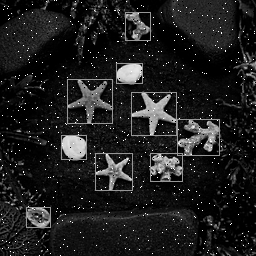

Part 4 目標
Part 3 已確認 synthesis 後的 structural/gate-level 功能與 Golden Model 一致。Part 4 再往 ASIC flow 推進：把邏輯映射到 standard cells，加入 Liberty timing model 與 SDC constraints 做 STA，最後銜接 placement、routing、parasitics 與 post-layout verification。
Part 4 的核心不只是「功能對」，而是開始回答：用哪些 cell？面積多少？10 ns clock 能不能過？critical path 在哪裡？佈局繞線後 timing 是否仍成立？
Part 3 → Part 4 差異
| 項目 | Part 3 | Part 4 |
|---|---|---|
| Netlist | Generic / structural gate | Technology-mapped standard-cell netlist |
| Library | 功能 cell model | .lib timing/area + P&R 的 .lef |
| Timing | 以功能模擬為主 | SDC + STA：setup/max、hold/min、WNS/TNS |
| Physical | 尚未 placement/routing | Floorplan → Place → CTS(大型設計) → Route → parasitics |
| 驗證 | Gate vs Golden | Mapped/Post-layout function + timing |
本套件仍使用 Part 2/3 同一張影像
Color Input

Grayscale Input

Golden Binary

Mapped Result
執行 mapped GLS 後產生 code/mapped_binary.txt，再與 data/golden_binary.txt 做 65,536 pixel 比對。
完整 Part 4 流程
| Step | 工作 | 主要輸入 | 主要輸出 / 檢查 |
|---|---|---|---|
| 1 | Read RTL | design.sv | Elaborated RTL |
| 2 | Technology Mapping | RTL + teaching.lib | binarization_mapped.v |
| 3 | Mapped GLS | mapped netlist + teaching_cells.v + gray.hex | mapped_binary.txt |
| 4 | Golden Compare | mapped_binary.txt + golden_binary.txt | Mismatch=0 / PASS |
| 5 | STA | mapped netlist + .lib + constraints.sdc | critical path, WNS, TNS |
| 6 | Floorplan / Placement | netlist + LEF + SDC | placed design |
| 7 | Routing / parasitics | placed design | routed DEF / post-route netlist |
| 8 | Post-layout STA / simulation | route + parasitic/timing data | final timing/function check |
1. Technology Library 是什麼？
lib/teaching.lib 是本教學套件的簡化 Liberty library，描述 cell 名稱、邏輯 function、area 與部分 timing 資訊；lib/teaching_cells.v 則是相同 cells 的 Verilog functional model，供 gate-level simulation 使用。
| 檔案 | 給誰用 | 內容 |
|---|---|---|
| .lib (Liberty) | Yosys / STA | cell function、area、delay、pin、clock 等 |
| .v cell models | Simulator | standard cell 的 Verilog 行為模型 |
| .lef | P&R | cell 尺寸、pin geometry、routing layer / site 等 physical abstract |
注意：本 ZIP 的 teaching.lib 是教學用簡化 library，不代表任何真實 foundry PDK。真正 P&R 必須換成課程或合法 PDK 提供的 technology LEF / cell LEF / Liberty。
2. Technology Mapping：Yosys
dfflibmap 負責將 flip-flop 對應到 library cell；abc -liberty 則依 Liberty library 將 combinational logic 做 technology mapping。
cd code
yosys -s synth_techmap.ys主要輸出：results/binarization_mapped.v、results/binarization_mapped.json、reports/yosys_techmap.log。
3. Mapped Gate-Level Simulation
cd code
cp ../data/gray.hex .
iverilog -g2012 -o simv_mapped ../lib/teaching_cells.v ../results/binarization_mapped.v testbench_mapped.sv
vvp simv_mapped
python compare_mapped.py預期核心判定：
Total pixels: 65536
Mismatch pixels: 0
Accuracy: 100.00%
PASS這一步證明「換成 standard-cell mapped netlist 後，邏輯功能仍與 Golden Model 一致」。
4. SDC：告訴 STA 你的 timing 要求
create_clock -name clk -period 10.000 [get_ports clk]
set_input_delay 1.0 -clock clk [get_ports {pix_in[*] threshold[*]}]
set_output_delay 1.0 -clock clk [get_ports pix_out]
set_false_path -from [get_ports rst_n]| Constraint | 意思 |
|---|---|
| create_clock 10 ns | 目標 clock = 100 MHz。 |
| input delay 1 ns | 外部來源可能在 clock edge 後 1 ns 才把資料送到 input port。 |
| output delay 1 ns | 保留 1 ns 給下游電路。 |
| false path reset | 此教學中不把 asynchronous reset 當一般 data timing path 分析。 |
5. STA：Static Timing Analysis
STA 不需要跑 65,536 組測試向量，而是根據 netlist、cell delay 與 timing constraints 系統性分析 timing path。若已安裝 OpenSTA：
cd code
sta sta.tcl| 指標 | 解讀 |
|---|---|
| Arrival Time | 資料實際最晚/最早到達時間。 |
| Required Time | 資料必須在此時間前/後滿足要求。 |
| Slack | Required − Arrival；setup/max 通常 slack ≥ 0 才 pass。 |
| WNS | Worst Negative Slack；最差 violation。 |
| TNS | Total Negative Slack；所有 negative slack 的總和。 |
| Critical Path | 最接近或超過 timing limit 的 path。 |
6. Placement & Routing
真正 P&R 需要 physical library。套件附 code/openroad_flow.tcl，流程順序已寫好，但你必須把 TECH.lef 與 CELLS.lef 換成課程/PDK 的合法檔案。
read_lef TECH.lef
read_lef CELLS.lef
read_liberty teaching.lib
read_verilog binarization_mapped.v
link_design binarization
read_sdc constraints.sdc
initialize_floorplan ...
place_pins ...
global_placement
detailed_placement
estimate_parasitics -placement
global_route
detailed_route
write_def binarization_routed.def
write_verilog binarization_postroute.v為什麼 ZIP 不直接放假的 LEF 讓它「看起來能跑」？ 因為 P&R 的 site、metal layers、tracks、via rules、cell geometry 都是製程相關資料。沒有真實 PDK，就不能把結果宣稱為真實 physical design。
7. Post-Layout Verification
Route 後 interconnect 會產生額外 RC delay，因此 timing 可能比 pre-layout 更差。完整 ASIC flow 通常會由 routed design 抽取 parasitics（例如 SPEF），再做 post-route STA；若課程要求，也可用 post-layout netlist + SDF 做 timing simulation。
8. 一鍵執行
Windows PowerShell
cd code
.\run_part4.ps1Linux / Git Bash
cd code
chmod +x run_part4.sh
./run_part4.sh腳本會依序做 Technology Mapping → Mapped GLS → Golden Compare；若偵測到 sta 指令，再自動做 STA。
9. 每個檔案詳細說明
| 檔案 | 角色 |
|---|---|
| code/design.sv | 與 Part 3 相同的 binarization RTL。 |
| lib/teaching.lib | 教學用 Liberty standard-cell library。 |
| lib/teaching_cells.v | standard-cell functional simulation models。 |
| code/synth_techmap.ys | Yosys technology mapping script。 |
| code/constraints.sdc | 100 MHz clock 與 I/O timing constraints。 |
| code/sta.tcl | OpenSTA script，輸出 max/min path、WNS/TNS 等 report。 |
| code/testbench_mapped.sv | 65,536 pixel mapped gate-level testbench。 |
| code/compare_mapped.py | Mapped output vs Golden 逐 pixel 比較。 |
| code/openroad_flow.tcl | OpenROAD P&R / post-place STA / route 教學模板。 |
| run_part4.ps1 / .sh | 一鍵執行 Part 4 可直接完成的部分。 |
| data/gray.hex | 同一份 256×256 grayscale input。 |
| data/golden_binary.txt | 同一份 Golden Model。 |
10. Part 4 完成判定
| Checkpoint | PASS 條件 |
|---|---|
| Technology Mapping | 成功產生 mapped netlist，且 cell 來自指定 library。 |
| Mapped GLS | 65,536 pixels，Mismatch = 0。 |
| STA | setup/max 與 hold/min 無 violation；WNS ≥ 0、TNS = 0（依課程設定）。 |
| P&R | 合法完成 placement/routing，無 placement/routing error。 |
| Post-route STA | 加入 parasitics 後 timing 仍符合 constraint。 |
| Final Function | post-layout / timing simulation（若要求）仍與 Golden 一致。 |
Part 1/2：功能；Part 3：Synthesis + Gate-Level 功能；Part 4：Technology + Timing + Physical。這樣就把 RTL 驗證一路接到 ASIC backend。